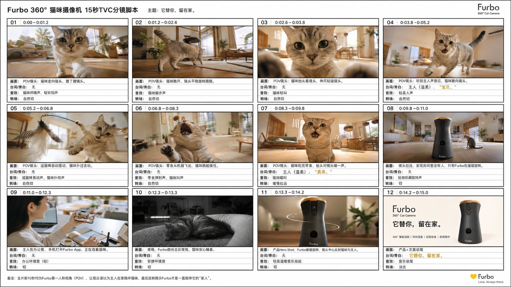
猫咪摄像头分镜
强调 POV 镜头、产品露出和家庭陪伴情绪。
AI Driven Creative Portfolio
A marketer.
A designer.
An AI enthusiast.
也是一个喜欢不断尝试新工具以及学习新知识的人。Let's create something amazing together.
Selected Work
Capability Matrix
AI Video Production
用 ChatGPT 梳理脚本和分镜，再使用即梦生成视频，把想法从文案、画面连续性到成片完整落地。

强调 POV 镜头、产品露出和家庭陪伴情绪。
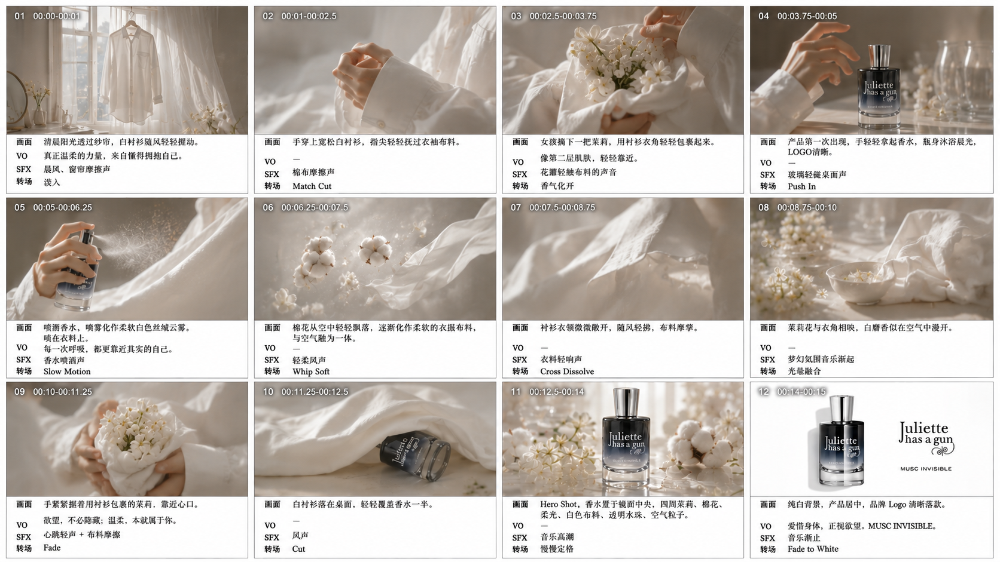
用柔光、织物、花束与产品 Hero Shot 构建气味想象。
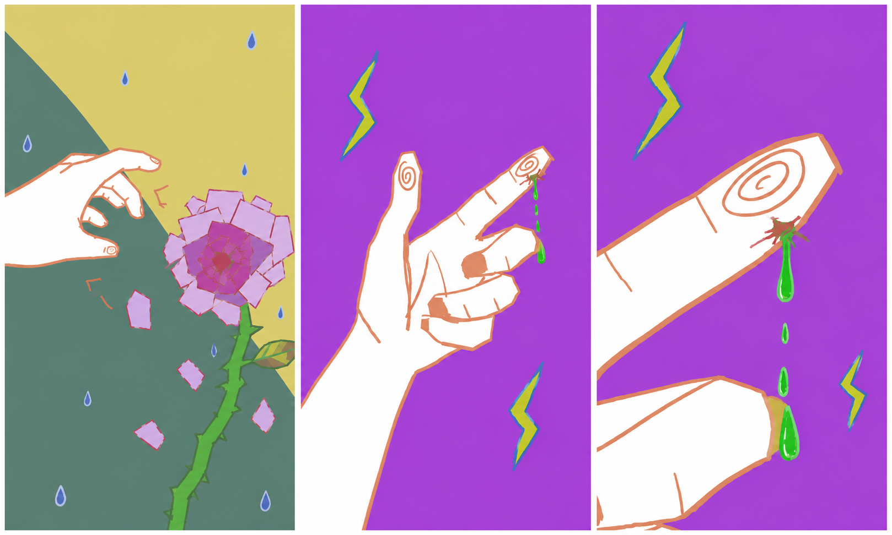
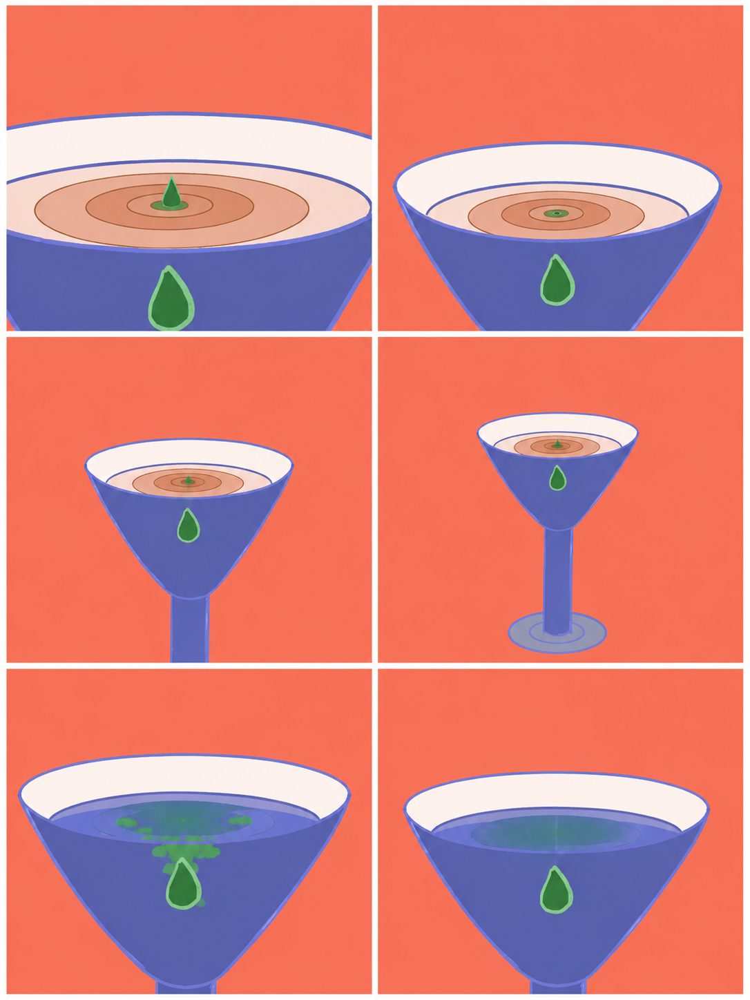
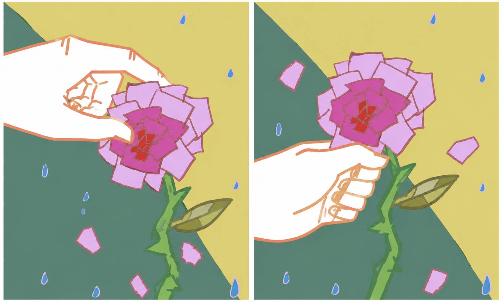
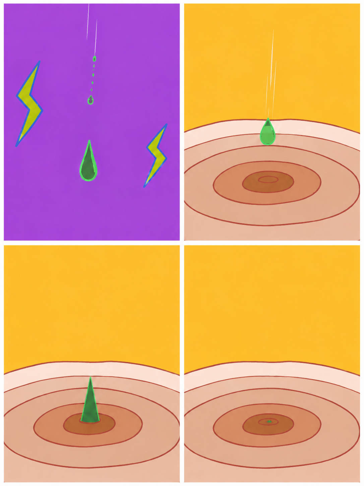
Hand-drawn Poster Design
从广告概念、画面排版到品牌表达，使用线稿方式完成四张不同主题的视觉草图。
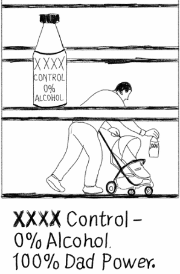
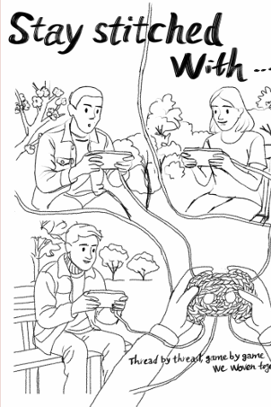
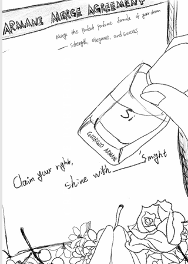
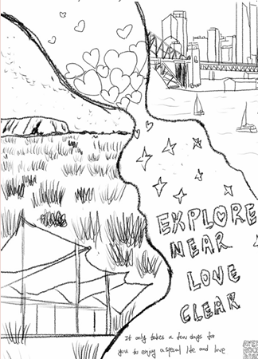
Graduate Internship
研究生期间参与 TRAVELAMP 与 Z00M-Z00M MEDIA 的新媒体内容、视频制作和传播项目。
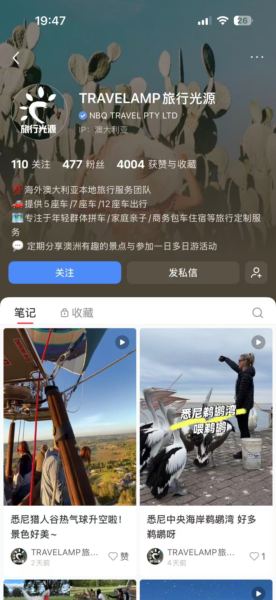
参与小红书与 Instagram 选题、发布计划、文案优化和用户互动，围绕澳洲旅行路线与目的地内容保持账号稳定更新。
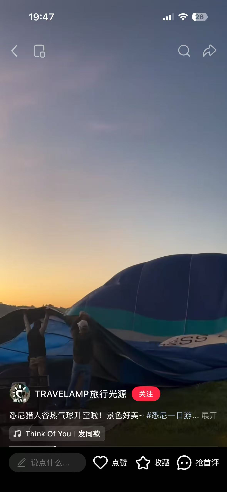
参与素材整理、节奏控制、字幕包装和社交媒体短视频优化，让内容更适合平台传播。
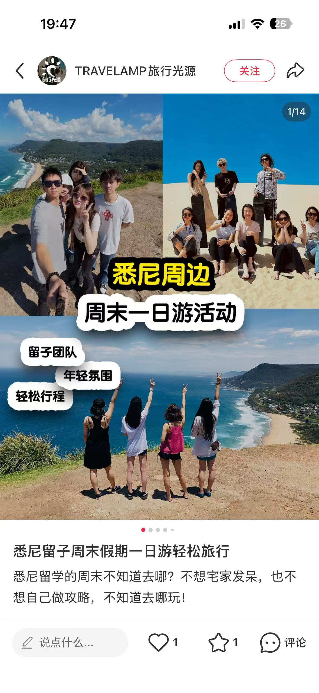
根据旅行产品卖点制作封面和图文内容，提高用户点击兴趣与内容识别度。
Video Production
熟悉视频从 0 到 1 的完整制作流程：创意策划、分镜设计、拍摄执行、PR 剪辑、字幕包装、节奏控制和广告视频表达。
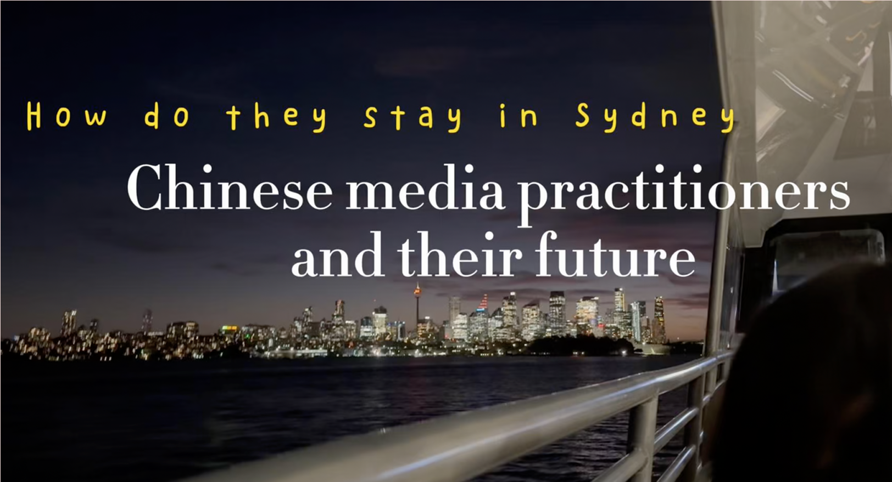
Website Design
使用 WordPress 设计并运营食品制作网站 A Half Hour Meal，网站视觉、绘画、拍摄和内容发布均由我独立完成。
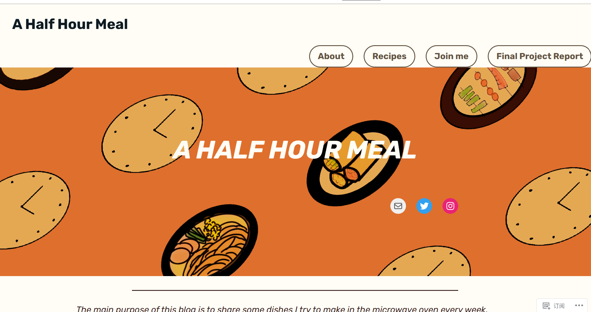
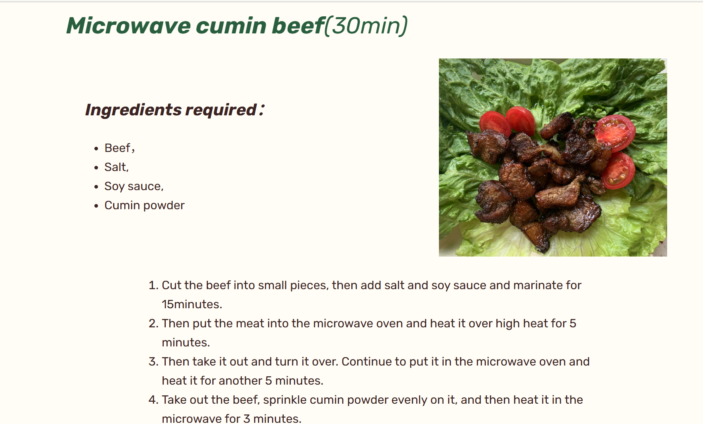
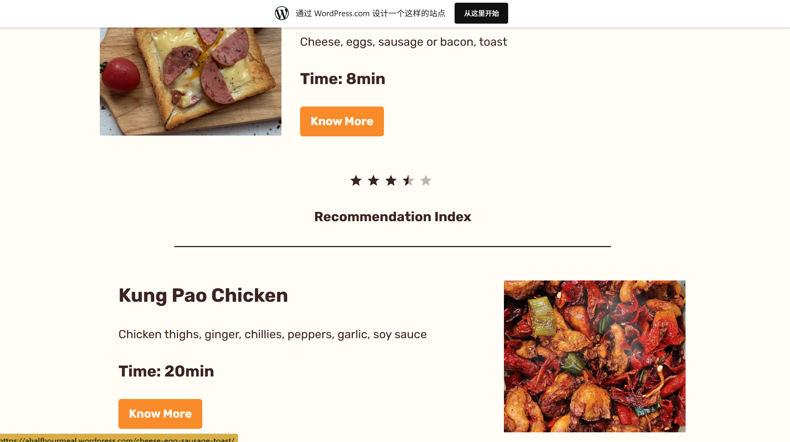
About
我希望把新媒体内容做得更有想法，也更能落地：从选题、脚本、分镜、拍摄、剪辑，到网页呈现和账号运营，都可以形成完整作品链路。
Contact